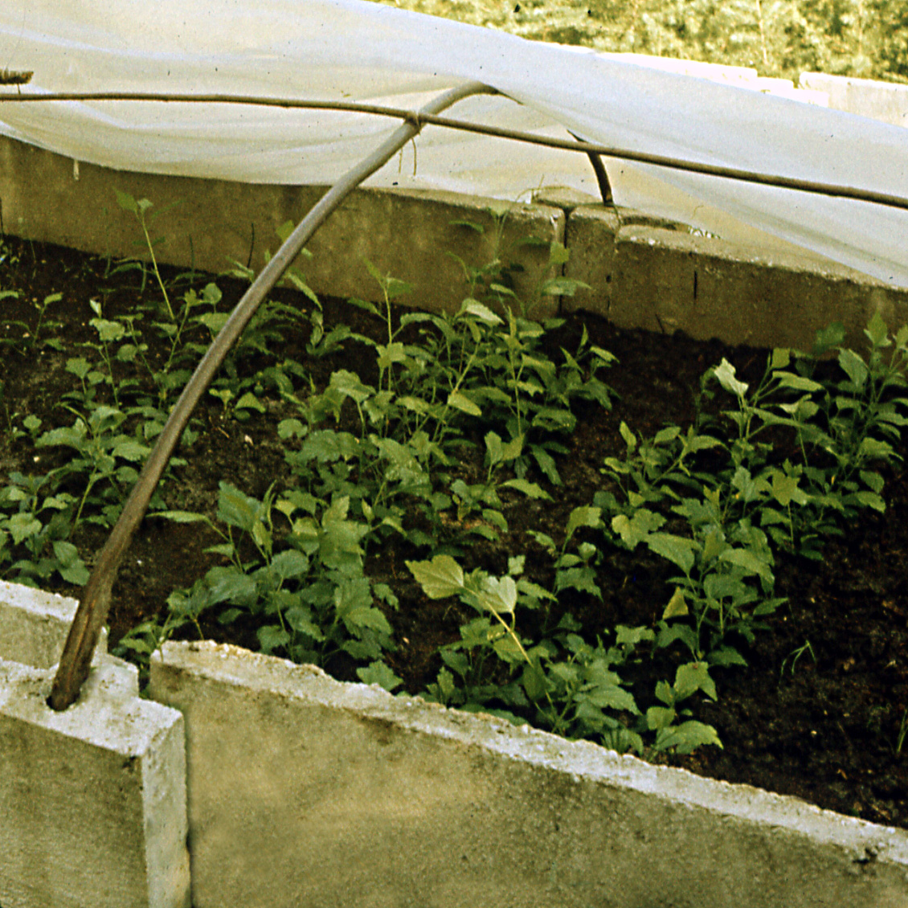

植物生长调节剂的应用
本期导读
应用实例 · 插条生根探究 · 2,4-D除草

视频原话 · 导读3 句
- 同学们好！这节课梳理人教版选择性必修一第五章第三节——植物生长调节剂的应用。8.4s
- 高考常考调节剂的应用实例、探究插条生根的最适浓度，以及2,4-D除草的原理。7.7s
- 我们按七个考点梳理，每个考点都讲清楚怎么考、怎么做。5.6s
概念与优点01#
人工合成的，对植物生长、发育有调节作用的化学物质
原料广泛
容易合成
效果稳定
效果稳定：植物体内往往缺乏分解它的酶，作用时间更长
易错
调节剂不属于植物激素：植物体内产生 → 激素；人工合成 → 调节剂
视频原话4 句
- 考点一，植物生长调节剂，是由人工合成的，对植物的生长、发育有调节作用的化学物质。8.7s
- 它的优点是原料广泛、容易合成、效果稳定。4.8s
- 效果为什么稳定？因为植物体内往往缺乏分解它的酶，它在体内作用的时间更长。7.9s
- 易错：植物生长调节剂是人工合成的，不属于植物激素。判断时看来源：植物体内产生的是激素，人工合成的是调节剂。12.0s
两类调节剂02#
与植物激素类似
分子结构和生理效应都与植物激素类似
例：吲哚丁酸
与植物激素完全不同
分子结构完全不同，但生理效应类似
例：α-萘乙酸、矮壮素
考法
是不是调节剂 → 看来源；属于哪一类 → 看分子结构
视频原话4 句
- 考点二，从分子结构来看，植物生长调节剂主要有两大类。5.9s
- 一类分子结构和生理效应都与植物激素类似，比如吲哚丁酸。6.2s
- 另一类分子结构与植物激素完全不同，但具有与植物激素类似的生理效应，比如α-萘乙酸和矮壮素。9.5s
- 考法：判断是不是植物生长调节剂，看来源；判断属于哪一类，才看分子结构。7.9s
应用实例03#
| 调节剂 | 应用 | 模拟的激素 |
|---|---|---|
| 乙烯利 | 催熟凤梨、香蕉等（释放乙烯） | 乙烯 |
| 赤霉素 | 大麦无须发芽就产生α-淀粉酶 → 啤酒生产 | 赤霉素 |
| 膨大剂 | 水果长势加快、个头变大（口感、储存受影响） | 细胞分裂素类 |
| 萘乙酸、2,4-D | 促进插条生根；高浓度除草 | 生长素 |
考法
常问模拟了哪种激素：乙烯利 → 乙烯；膨大剂 → 细胞分裂素类；萘乙酸、2,4-D → 生长素
视频原话5 句
- 考点三，应用实例。2.5s
- 用乙烯利催熟凤梨、香蕉等水果，乙烯利能释放出乙烯。5.9s
- 用赤霉素处理大麦种子，使它无须发芽就能产生α-淀粉酶，用于啤酒生产，降低成本。8.8s
- 用膨大剂使水果长势加快、个头变大，但可能影响口感，也不利于长时间储存。7.9s
- 考法：常问调节剂模拟了哪种激素：乙烯利对应乙烯，膨大剂多为细胞分裂素类，萘乙酸、2,4-D对应生长素。11.0s
施用注意事项04#
种类
浓度
时间
部位
生理状态、气候
残留与安全
易错
调节剂不是越多越好：赤霉素过量 → 水稻疯长、结实率降低
视频原话4 句
- 考点四，施用植物生长调节剂，要注意哪些问题？4.9s
- 要选择恰当的种类，考虑施用的浓度、时间和部位，以及植物的生理状态和气候条件等。8.2s
- 还要注意调节剂的残留，以及对人体健康和环境的影响。5.4s
- 易错：调节剂不是越多越好，浓度不当会适得其反。比如赤霉素过量，水稻会疯长，结实率反而降低。10.5s
插条生根的探究05#
- 预实验：大范围浓度梯度
- →确定大致范围
- 缩小梯度 →正式实验：找最适浓度
浸泡法
浓度较低，时间较长
最好在遮阴、空气湿度较高处
沾蘸法
浓度较高，时间较短
约5秒
自变量：调节剂浓度
因变量：生根数目或长度
无关变量：插条长短、芽数、处理时间
易错
预实验要设蒸馏水空白对照；正式实验在确定范围内缩小梯度，各组相互对照
视频原话5 句
- 考点五，探究实践：探索生长素类调节剂促进插条生根的最适浓度。6.9s
- 先做预实验：在较大的浓度范围内设置浓度梯度，摸索最适浓度的大致范围，避免盲目开展实验，造成浪费。10.7s
- 处理插条有两种方法：浸泡法，溶液浓度较低，处理时间较长；沾蘸法，溶液浓度较高，处理时间较短，约5秒。11.2s
- 自变量是调节剂的浓度，因变量是插条生根的数目或长度；插条的长短、芽的数量、处理时间等是无关变量，要相同且适宜。12.3s
- 易错：预实验要设置蒸馏水的空白对照；正式实验在预实验确定的范围内缩小浓度梯度，各组之间相互对照。10.6s
实验结果分析06#
最高点 → 最适浓度；两侧有效果相同的两个浓度
高于对照 → 促进；低于对照（c点以后）→ 抑制
解题方法
判断促进还是抑制，要和空白对照比较，不能只看曲线上升还是下降
视频原话4 句
- 考点六，实验结果分析。以调节剂浓度为横轴、生根数为纵轴，曲线先升后降。8.4s
- 曲线最高点对应的浓度是最适浓度；在最适浓度两侧，存在两个不同浓度，生根效果相同。8.7s
- 和蒸馏水对照组比：生根数多于对照组，是促进；少于对照组，才是抑制。7.7s
- 解题方法：判断促进还是抑制，一定要和空白对照比较，不能只看曲线是上升还是下降。8.7s
2,4-D除草07#
高浓度2,4-D → 除草剂
双子叶比单子叶更敏感
选用浓度：双子叶在抑制区，单子叶在促进区
易错
原理：敏感程度不同；小麦田、玉米田可用，大豆田不能用（大豆是双子叶植物）
视频原话4 句
- 考点七，高浓度的2,4-D可以用作除草剂。4.5s
- 双子叶植物对生长素类调节剂比单子叶植物更敏感。在单子叶作物的农田里，用一定浓度的2,4-D，能抑制甚至杀死双子叶杂草，对作物却影响较小。14.6s
- 看曲线：选择的浓度，要落在双子叶植物曲线的抑制区，同时落在单子叶植物曲线的促进区。8.8s
- 易错：除草的原理是不同植物对它的敏感程度不同；小麦田、玉米田可以用，大豆田不能用，因为大豆也是双子叶植物。11.3s
易错速查✓
先自己判断，再点按钮查看对错与解析。
- 1植物生长调节剂具有原料广泛、容易合成、效果稳定等优点说法正确。
- 2植物生长调节剂施用浓度越高效果越好说法错误：浓度要适宜，过量会适得其反
- 3用赤霉素处理大麦，可使其无须发芽就产生α-淀粉酶说法正确。
- 4浸泡法处理插条时溶液浓度较高说法错误：浓度较低，处理时间较长
- 5预实验可以为正式实验摸索条件说法正确。
- 6可以用2,4-D除去大豆田中的双子叶杂草说法错误：大豆也是双子叶植物
浓度适宜是关键，对照比较定促抑！
视频原话 · 易错速查5 句
- 最后，用六道判断题检验一下。3.6s
- 植物生长调节剂具有原料广泛、容易合成、效果稳定等优点？对。施用浓度越高效果越好？错，浓度要适宜。12.1s
- 用赤霉素处理大麦，可使其无须发芽就产生α-淀粉酶？对。浸泡法处理插条时溶液浓度较高？错，浓度较低、时间较长。13.5s
- 预实验可以为正式实验摸索条件？对。可以用2,4-D除去大豆田中的双子叶杂草？错，大豆也是双子叶植物。11.5s
- 七个考点串起来：调节剂人工合成、效果稳定，应用时浓度要适宜，探究最适浓度先做预实验，判断促抑看对照。掌握这些，这一节就能稳稳拿分！我们下期再见！16.2s
图片来源
图片来源：Wikimedia Commons —— Gmihail《Rooting of green cuttings of Hibiscus syriacus》CC BY-SA 3.0 RS
Photo: Gmihail, CC BY-SA 3.0 RS